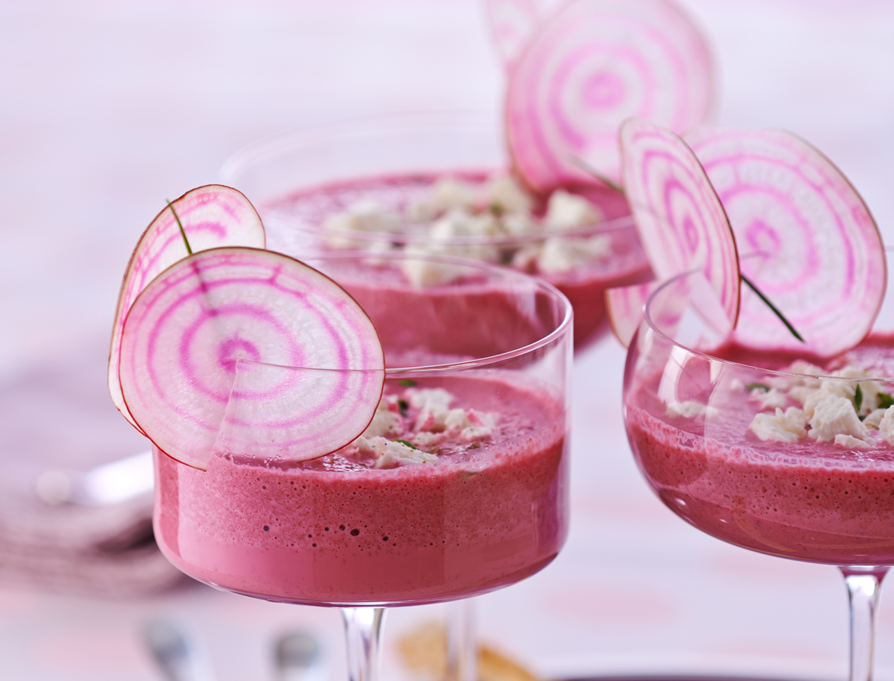

<ion-view view-title="Velouté froid de betteraves">

    <ion-content class="padding">


        <h1>Velouté froid de betteraves</h1>

        

        <p class="gras">Temps de préparation : 20 minutes</p>

        <p class="gras">Temps de cuisson : 15 minutes</p>

        <p class="gras">Ingrédients (pour 4 personnes) :</p>

        <ul>
            <li>- 2 belles betteraves</li>
            <li>- 1 gousse d'ail</li>
            <li>- 1 cuillère à café d'huile d'olive</li>
            <li>- 2 yaourts bulgare (ou Fjord)</li>
            <li>- 1 quart de concombre</li>
            <li>- Sel, poivre</li>
            <li>- Concombre (un peu, pour décorer)</li>
            <li>- Persil plat (pour décorer)</li>
            <li>- 2 courts-bouillons Knorr au poisson</li>
            <li>- Sel</li>
            <li>- Poivre</li>
        </ul>
        <br>

        <p class="gras">Préparation de la recette :</p>

        <p>Faire cuire les betteraves (à la cocotte minute,c'est plus rapide).</p>

        <p>Quand elles sont froides, les mixer avec les yaourts, huile d'olive, concombre, ail, sel, poivre.</p>

        <p>Répartir sur les assiettes. Décorer de fins bâtonnets de concombres et de persil plat.</p>

    </ion-content>

</ion-view>